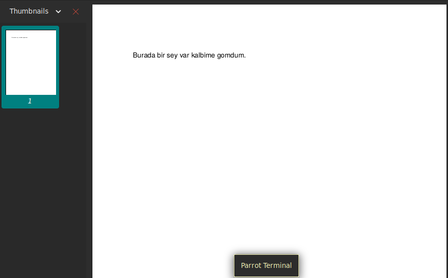
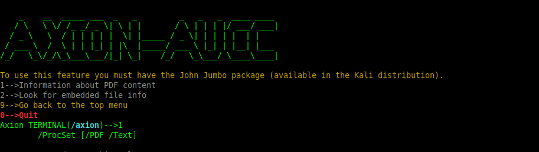
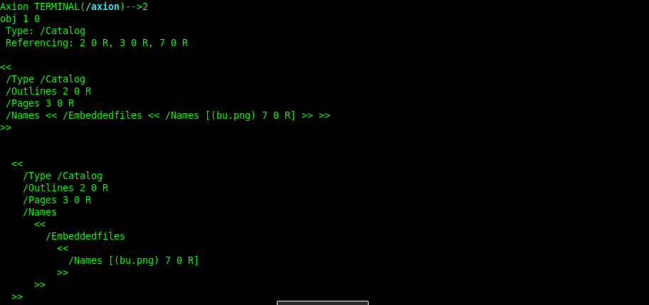
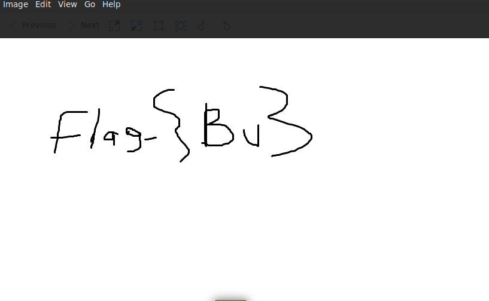

Öncellikle elimize geçen aucc isimli pdf dosyasını açalım.

Burada görüldüğü üzere pdf içeriğinde bir yazı karşımıza geliyor. Yazıda "Burada bir sey var kalbime gomdum" yazmasına rağmen pdf'e baktığımızda yazıdan başka bir şey göremiyoruz.

Bu şekilde 1.seçeneği seçerek içerik bilgisine baktığımızda ise içeriğinde sadece text olduğunu görüyoruz fakat halen başka bir şey ile karşılaşmadık.

Bir sonraki işlem için 2. seçeneği kullanarak pdf içine gömülü dosyaları ve verileri böylelikle görebiliyoruz.
Yukarıdaki resimdeki gibi karşımıza bu.png adında bir dosya beliriyor. Bu dosyanın pdf içinden çıkarım işlemini ise yine Axion yardımı ile File Analysis kısmının 2. seçeneğini kullanıyoruz.
Png dosyasını açtığımızda ise flag karşımıza çıkıyor.

Flag_{Bu}